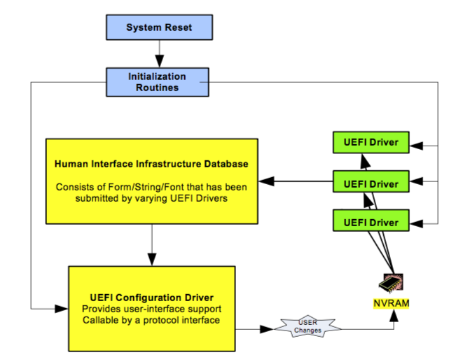

Vault7: CIA Hacking Tools Revealed
Navigation: » Latest version
Owner: User #71491
EFI Basics: NVRAM Variables
('toc' missing)
NVRAM Variables Explained
NVRAM is non-volatile RAMRandom Access Memory that is used in EFIExtensible Firmware Interface to store variables that need to persist between boots. Many of these NVRAMNon-volatile Random Access Memory variables are architecturally defined, and setting invalid options to NVRAMNon-volatile Random Access Memory could cause a machine to not be able to boot.
During the startup process, multiple drivers and applications can rely on NVRAMNon-volatile Random Access Memory values to help them do their jobs. Below is a diagram from the UEFIUniversal Extendible Firmware Interface 2.56 specification that shows this happening.

Because the bootloader and other drivers are configured to load information from NVRAM, if we can write to some of these NVRAMNon-volatile Random Access Memory variables, we will have control over parts of how the system boots.
NVRAM variables are a combination of a GUIDGlobally Unique Identifier of the variable owner, a name, and a value. An example of a few of these values, as displayed by the UEFIUniversal Extendible Firmware Interface shell command dmpstore, is below:
Variable NV+RT+BS 'Efi:Boot0080' DataSize = 68
00000000: 01 00 00 00 50 00 4D 00-61 00 63 00 20 00 4F 00 *....P.M.a.c. .O.*
00000010: 53 00 20 00 58 00 00 00-02 01 0C 00 D0 41 03 0A *S. .X........A..*
00000020: 00 00 00 00 01 01 06 00-05 1C 01 01 06 00 00 00 *................*
00000030: 03 12 0A 00 00 00 00 00-00 00 04 01 2A 00 03 00 *............*...*
00000040: 00 00 B8 A0 0C 0E 00 00-00 00 20 5F 13 00 00 00 *.......... _....*
00000050: 00 00 65 5A 48 A0 E7 20-4D 4A B3 DE DBSoftware Development Branch 1C 77 3D *..eZH.. MJ....w=*
00000060: 81 87 02 02 7F FF 04 00- *........*
Variable NV+RT+BS '7C436110-AB2A-4BBB-A880-FE41995C9F82:efi-boot-device-data' DataSize = 50
00000000: 02 01 0C 00 D0 41 03 0A-00 00 00 00 01 01 06 00 *.....A..........*
00000010: 05 1C 01 01 06 00 00 00-03 12 0A 00 00 00 00 00 *................*
00000020: 00 00 04 01 2A 00 03 00-00 00 B8 A0 0C 0E 00 00 *....*...........*
00000030: 00 00 20 5F 13 00 00 00-00 00 65 5A 48 A0 E7 20 *.. _......eZH.. *
00000040: 4D 4A B3 DE DBSoftware Development Branch 1C 77 3D-81 87 02 02 7F FF 04 00 *MJ....w=........*Important NVRAMNon-volatile Random Access Memory Variables and GUIDs.
Below are some important NVRAMNon-volatile Random Access Memory variables to be aware of. There is technically no guarantee that these variables will be present on any machine, they are either defined by the specification or known to be used by specific vendors.
This list is not comprehensive: items will be added/taken away as things change or we discover new things that we care about.
| GUID | Variable Name | General Description |
|---|---|---|
| 8BE4DF61-93CA-11D2-AA0D-00E098032B8C (Efi) | BootOrder |
An in-order array of 16-bit integers that refer to boot options. The system will attempt to boot from each of the Boot#### devices in the order that they are listed in this variable. Once a boot option is successfully loaded, the system does not continue to try to load any subsequent boot options. |
| 8BE4DF61-93CA-11D2-AA0D-00E098032B8C (Efi) | Boot#### |
One particular device that can be booted. #### is a four-digit hex number. This variable is of the type EFI_LOAD_OPTION, found in section 3.1.3 of the UEFI 2.5 spec. |
| 8BE4DF61-93CA-11D2-AA0D-00E098032B8C (Efi) | DriverOrder |
An in-order array of 16-bit integers of drivers to be loaded. Similar to BootOrder, this variable lists the drivers that are to be loaded on boot in order. However, unlike BootOrder, all drivers will be loaded, not just the first successful driver. |
| 8BE4DF61-93CA-11D2-AA0D-00E098032B8C (Efi) | Driver#### |
A driver that is to be loaded on boot, if selected in DriverOrder. #### is a four-digit hex number. This variable is of the type EFI_LOAD_OPTION, found in section 3.1.3 of the UEFIUniversal Extendible Firmware Interface 2.5 spec. |
| 4D1ED05-38C7-4A6A-9CC6-4BCCA8B38C14 | EnableDriverOrder |
Apple specific, causes loader to use the DriverOrder and Driver#### variables. Consumed after use. Uses DriverOrder if EnableDriverOrder==0x31 |
| 7C436110-AB2A-4BBB-A880-FE41995C9F82 | csr-active-config |
Apple specific, configuration for El Capitan's SIP. A value of 0x10 means that it is enabled, 0x77 means that it is completely disabled. |
Setting NVRAMNon-volatile Random Access Memory Variables from OSOperating System X
It is possible to set (some) variables from the OSOperating System X Terminal if you have root. The command to use is nvram, whose manpage output is below.
nvram(8) nvram(8)
NAME
nvram - manipulate firmware NVRAMNon-volatile Random Access Memory variables
SYNOPSIS
nvram [ -p ] [ -f filename ] [ -d name ] [ -c ] [ name [= value ]] ...
DESCRIPTION
The nvram command allows manipulation of firmware NVRAMNon-volatile Random Access Memory variables. It
can be used to get or set a variable. It can also be used to print all
of the variables or set a list of variables from a file. Changes to
NVRAMNon-volatile Random Access Memory variables are only saved by clean restart or shutdown.
In principle, name can be any string. In practice, not all strings
will be accepted. New World machines can create new variables as
desired. Some variables require administrator privilege to get or set.
The given value must match the data type required for name. Binary
data can be set using the %xx notation, where xx is the hex value of
the byte. The type for new variables is always binary data.
OPTIONS
-d name
Deletes the named firmware variable.
-f filename
Set firmware variables from a text file. The file must be a
list of "name value" statements. The first space on each line
is taken to be the separator between "name" and "value". If the
last character of a line is \, the value extends to the next
line.
-x Use XMLExtensible Markup Language format for reading and writing variables. This option
must be used before the -p or -f options, since arguments are
processed in order.
-c Delete all of the firmware variables.
-p Print all of the firmware variables.
EXAMPLES
example% nvram boot-args="-s rd=*hd:10"
Set the boot-args variable to "-s rd=*hd:10". This would specify sin-
gle user mode with the root device in hard drive partition 10.
example% nvram my-variable="String One%00String Two%00%00"
Create a new variable, my-variable, containing a list of two C-strings
that is terminated by a NUL.
example% nvram -d my-variable
Deletes the variable named my-variable.
October 28, 2003 nvram(8)
However, the manpage does not tell you everything you need to know about nvram. Although nvram -p claims to print all of the firmware variables, it does not print any of the variables that belong to the Efi GUID.
Similarly, by default, any NVRAMNon-volatile Random Access Memory variable that you set from this tool will have the Apple GUIDGlobally Unique Identifier used by csr-active-config (in the table in the previous section.) However, if you are trying to set values like DriverOrder, they need to have the correct GUID, or they will not be processed by EFIExtensible Firmware Interface like you want.
Fortunately, you actually can set variables such as DriverOrder using the nvram as long as you specify the GUID. An example of this, which sets Driver order to load Driver5000 (endian-ness is important) and another command to set EnableDriverOrder are below:
$ sudo nvram 8BE4DF61-93CA-11D2-AA0D-00E098032B8C:DriverOrder=%00%50
$ sudo nvram 4D1ED05-38C7-4A6A-9CC6-4BCCA8B38C14:EnableDriverOrder=1
Issues Created by SIPSession Initiation Protocol (Internet Telephony) (rootless) in OSOperating System X 10.11
With the introduction of System Integrity Protection in OSOperating System X 10.11 (El Capitan), Apple has locked down some of the things you can do with the nvram command.
Specifically, you can no longer set any variables that belong to the Efi GUID, like BootOrder. Similarly, you are not allowed to change the NVRAMNon-volatile Random Access Memory variable that stores the SIPSession Initiation Protocol (Internet Telephony) configuration, csr-active-config.
However, at least as of 10.11.0 (10/2/2015), you can still set the EnableDriverOrder variable.
Setting NVRAMNon-volatile Random Access Memory Variables from an EFIExtensible Firmware Interface Application/Driver
If you are running from within an EFIExtensible Firmware Interface context, you can set NVRAMNon-volatile Random Access Memory variables directly. Found on page 241 of the UEFIUniversal Extendible Firmware Interface 2.5 spec, the command to set an NVRAMNon-volatile Random Access Memory variable is as follows:
EFI_RUNTIME_SERVICES->SetVariable(
CHAR16* VariableName,
EFI_GUID *VendorGuid,
UINT32 Attributes,
UINTN DataSize,
VOID *Data
);If you would like examples of how this is done in practice, you can find them in DarkMallet (stash link, see mallet.c and mallet.h) or in the QuarkMatter proof-of-concept DriverOrder program (stash link).
NVRAM Indications of Apple System Configuration Changes